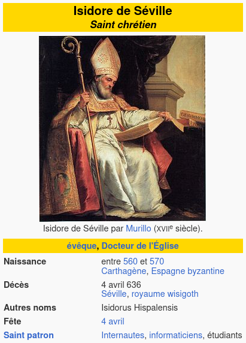
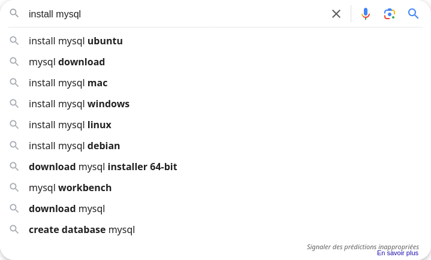
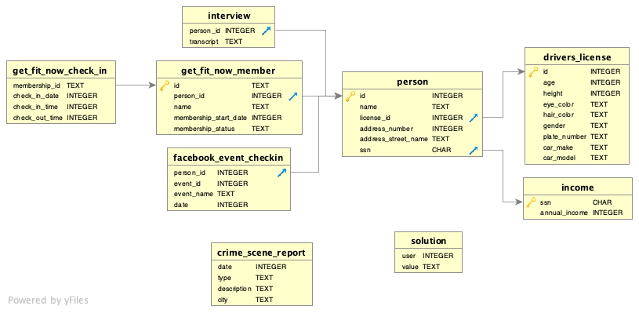
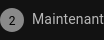
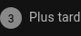
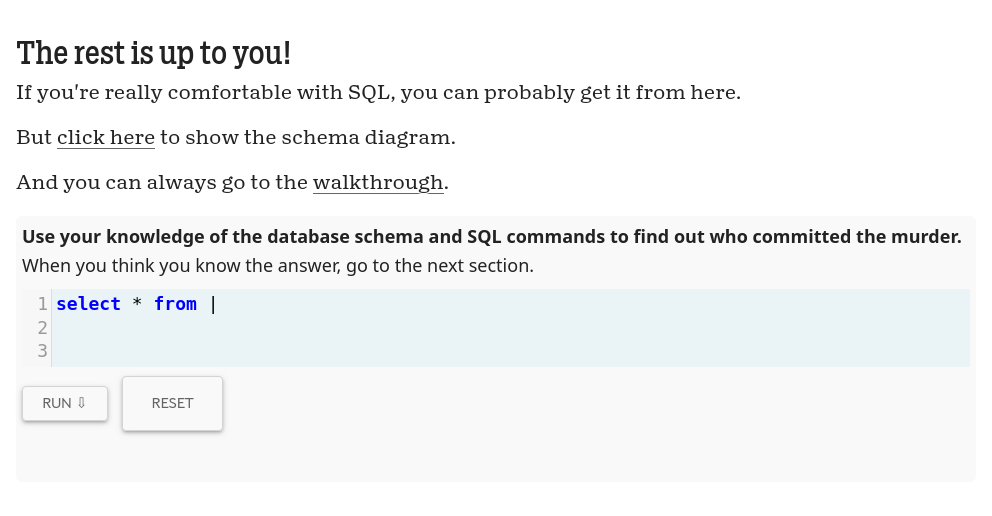

Installer et configurer MySQL
Objectifs
- Installer MySQL
- Découvrir le langage SQL
- Pratiquer des requêtes simples
Introduction
Bienvenue dans cette aventure où enquête et technologie se rencontrent ! Ce support va t’initier aux bases de données et au langage SQL, des outils indispensables pour organiser et manipuler des informations.
Pour rendre cet apprentissage aussi immersif que ludique, tu vas participer à une Murder Party en ligne. L’enquête, pleine de mystère, te guidera dans la découverte des bases de données, tout en te permettant de t’initier aux requêtes SQL.
Sommaire
Invitation à une Murder Party en équipe !
(Cette partie est uniquement du story-telling pour te mettre dans l'ambiance : elle ne contient pas d'information indispensable pour le reste de la quête)
Bonjour à tous,
L'équipe database vous invite à participer à une Murder Party en ligne sur Mystery Knight Lab. C'est l'occasion parfaite de tester vos talents de détectives et de résoudre une enquête en équipe !
Ça se passe où ? En ligne, sur https://mystery.knightlab.com/
On vous attend nombreux pour ce moment fun et plein de mystère ! 😎
À bientôt, L'équipe database
Database ?
Avant de commencer notre enquête, parlons des bases de données ! Ce sont des outils essentiels pour organiser et gérer des informations. Par exemple, dans notre Murder Party, la base de données peut contenir des détails sur les personnages, les lieux, et les indices.
Le sachiez-tu ? 🤓
Saint Isidore de Séville, un évêque espagnol du VIIe siècle, est souvent considéré comme le saint patron des développeurs et de l'informatique ! Pourquoi ? Parce qu'il a compilé les "Étymologies", une sorte de première base de données du savoir de l'époque. Cet ouvrage monumental rassemblait des informations sur divers domaines, de la théologie à la grammaire, et constituait une véritable encyclopédie de la connaissance.
Il est donc vénéré par les devs pour avoir créé un système d'organisation de données... avant même l'invention des ordinateurs ! 📚💻

Installer MySQL
Pour résoudre l'enquête, tu vas utiliser un logiciel de gestion de bases de données relationnelles en ligne, comme MySQL.
Afin de t'entraîner et aussi d'utiliser MySQL dans tes projets à venir, tu dois l'installer sur ta machine :
Cherche "install mysql" sur ton moteur de recherche préféré (sur Google ?)

Complète la recherche en précisant ton OS.
Par exemple "install mysql ubuntu".
Nos recherches (qui peuvent te correspondre... ou pas) :
Le langage SQL
SQL (Structured Query Language) est le langage utilisé pour interagir avec une base de données. Avec SQL, tu peux insérer des données, interroger des informations ou encore modifier la structure de la base. Voici quelques bases pour commencer :
Comprendre un schéma de base de données
Un schéma de base de données est une représentation graphique des tables et des relations entre elles. Cela te permet de visualiser l'organisation des données. Dans notre enquête, un schéma pourrait inclure :
- Une table suspects (les personnages)
- Une table indices (les objets trouvés)
- Une table lieux (les endroits où les indices sont trouvés)
Exemple de schéma :
Dans cet exemple, un suspect peut être lié à un indice trouvé dans un lieu.
Ce schéma utilise une notation en patte d'oie (Crow's foot notation en anglais). Tu peux voir ces pattes d'oies ᛉ sur certaines extrémités des traits qui relient les tables.
De nombreuses notations différentes existent pour les schémas de base de données. Le site https://mystery.knightlab.com/ utilise une notation avec des flèches :

Aujourd'hui, tu découvres ces schémas : tu dois apprendre une première notation pour avoir un langage commun avec tes camarades pendant la formation. Ces quêtes te présentent des schémas de modélisation en utilisant la méthode Merise :
Requêtes avancées
Maintenant que tu sais manipuler des données de base, tu en sais assez pour résoudre l'enquête finale. Avec des notions plus avancées, tu peux la résoudre avec moins de requêtes... mais en contrepartie, ces requêtes seront plus complexes. Tu peux y jeter un oeil maintenant si tu le souhaites. Quel que soit ton choix, tu verras ces notions avancées plus tard dans la formation : rien ne presse.
- 1
Comment tu te sens ?
Tu te sens de les aborder maintenant ? Clique sur l'étape :

Tu te sens de les aborder plus tard ? Clique sur l'étape :

- 2
- 3
Plus tard
Tu as raison. À chaque jour suffit sa peine :)
Challenge
Réunis une équipe et rendez vous sur https://mystery.knightlab.com/.
À vous de trouver le ou la coupable en enquêtant avec des requêtes SQL :

Publie le nom du meurtrier en solution.
Critères de validation
- [ ] Le nom du meurtrier est correct
Un déroulé possible :
select
*
from
crime_scene_report
where
date = "20180115"
and type = "murder"
and city = "SQL City";
Security footage shows that there were 2 witnesses. The first witness lives at the last house on "Northwestern Dr". The second witness, named Annabel, lives somewhere on "Franklin Ave".
select
*
from
person
where
address_street_name = "Northwestern Dr"
order by
address_number desc
limit
1;
14887
select
*
from
person
where
name like "Annabel%"
and address_street_name = "Franklin Ave";
16371
select
*
from
interview
where
person_id in (14887, 16371);
I heard a gunshot and then saw a man run out. He had a "Get Fit Now Gym" bag. The membership number on the bag started with "48Z". Only gold members have those bags. The man got into a car with a plate that included "H42W".
I saw the murder happen, and I recognized the killer from my gym when I was working out last week on January the 9th.
select
*
from
get_fit_now_member
where
id like "48Z%"
and membership_status = "gold";
28819 67318
select
person.name
from
drivers_license
join person on person.license_id = drivers_license.id
where
person.id in (28819, 67318);
Jeremy Bowers
Congrats, you found the murderer! But wait, there's more... If you think you're up for a challenge, try querying the interview transcript of the murderer to find the real villain behind this crime. If you feel especially confident in your SQL skills, try to complete this final step with no more than 2 queries. Use this same INSERT statement with your new suspect to check your answer.
select
*
from
interview
where
person_id = 67318;
I was hired by a woman with a lot of money. I don't know her name but I know she's around 5'5" (65") or 5'7" (67"). She has red hair and she drives a Tesla Model S. I know that she attended the SQL Symphony Concert 3 times in December 2017.
select
person.name
from
drivers_license
join person on person.license_id = drivers_license.id
join facebook_event_checkin on person.id = facebook_event_checkin.person_id
where
height between 65 and 67
and hair_color = "red"
and car_make = "Tesla"
and car_model = "Model S"
and event_name = "SQL Symphony Concert"
and date like "201712%"
group by
person_id
having
count(*) = 3;
Miranda Priestly
Congrats, you found the brains behind the murder! Everyone in SQL City hails you as the greatest SQL detective of all time. Time to break out the champagne!